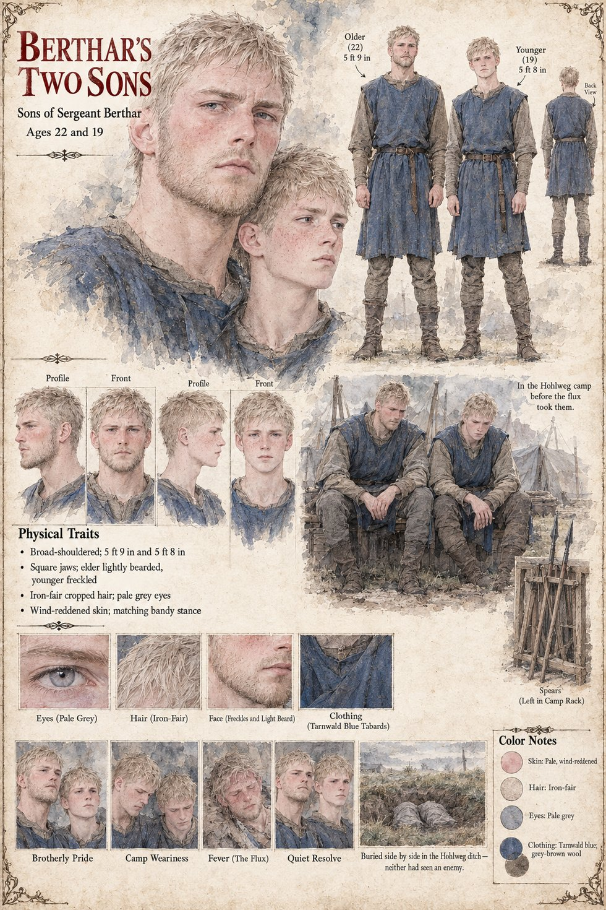

Berthar's Two Sons
Sons of Sergeant Berthar · unnamed · ages 22 and 19
The two sons of Berthar, sergeant of the Tarnwald household, whose own sheet has him bury them on the Hohlweg. The elder is twenty-two, about 5 ft 9 in and lightly bearded; the younger is nineteen, about 5 ft 8 in and freckled. Both are broad-shouldered and square-jawed, with iron-fair cropped hair, pale grey eyes, wind-reddened skin and their father's bandy stance, and both wear the Tarnwald-blue tabard over grey-brown wool.
The sheet gives them one place and one end. In the Hohlweg camp before the flux took them sits them side by side on a bench, hands loose between their knees, with their spears left in the camp rack behind; the last scene, Buried side by side in the Hohlweg ditch, draws two shrouded forms in a grassy trench, with the line neither had seen an enemy. Their father's sheet says only that he buries two sons and does not say how they died; this one says the flux. The Hohlweg is the road on which, on Ansbert's and Brun's pages, the household finds the stranger. Neither son is named on either sheet.
Their expression panels run Brotherly Pride, Camp Weariness, Fever (The Flux) and Quiet Resolve. Written from the sheet, from what the other Case 4181 pages already say, and from the character notes in the case's publication-prep file; the manuscript itself was not to hand. Their ages of 22 and 19, their builds, their iron-fair hair and pale grey eyes and the Tarnwald-blue tabards are the sheet's own.
“neither had seen an enemy”